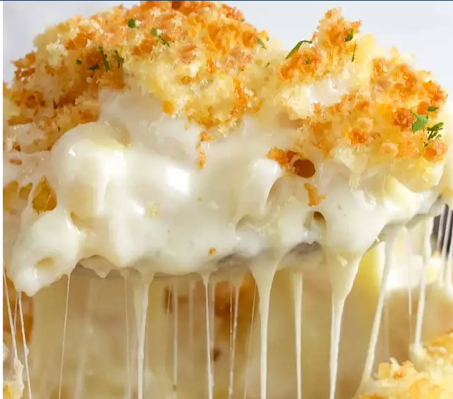

/head>

Aunt Kim's Extra Cheesy Mac and Cheese
Crowd Favorite Multi-Cheese Baked Macaronni and Cheese
This family favorite recipe was a close kept family secret for years. Finally revealed to the world including its surprising but effective secret ingredient. With each bite full of multiple types of cheese and every forkful complete with the oft mentioned cheese pull.
Surpringly easy to make, the recipe is easily scalable up for bigger crowds or down for solo portions.This recipe also forgoes the eggs used in many similar recipes instead relying entirely on the perfect mix of cheese, the right noodle vehicle, and a broil finish to crisp the top layer for a satisfying textural difference.
Ingredients
- 1kg Cheese blend: Reccomended blend 1 part Sharp Cheddar, 1 part Medium Cheddar, 1 part Monterey Jack
- 250g Velveta
- 1kg Flat egg noodles
- 2 sticks (about 200g) Salted Butter.
- (Optional) 150g breadcrumbs for topping.
Directions
- Cook noodles according to packaging slightly shortening cook time to al dente.
- Meanwhile shred block cheese and mix into seperate bowl.
- Cut veleta into 2cm cubes.
- Melt butter and grease bottom of baking dish.
- Once noodles are done make a layer of noodlesm, followed by layer of shredded cheese, followed by layer of spaced velveta.
- Repeat layering process until all ingredients are used, saving about one layer of shredded cheese.
- Cut second stick of butter into thin slices and spread over top layer.
- Optional: Finish with layer of breadcrumbs on top.
- Cover with foil and bake at 150C for 20 min or until cheese has melted throughout.
- Remove from oven and cover with last layer of cheese and broil for 2 to 3 min or until top layer of cheese is melted and crispy.
- Re-cover with foil and allow to rest for 5 minutes before serving.